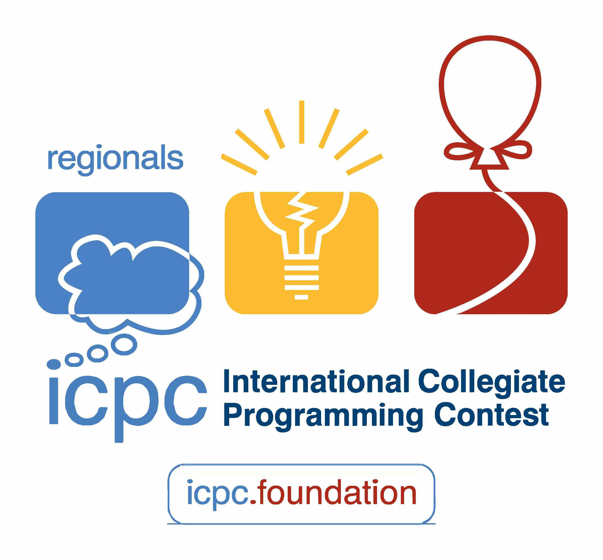

PROGRAMACIÓN COMPETITIVA
¿ QUÉ ES ?
La programación competitiva, es decir, la programación en un entorno competitivo,
en el que gana el equipo que resuelve el mayor número de problemas en un tiempo predeterminado,
de acuerdo con las especificaciones proporcionadas,
haciendo uso de la programación.
En caso de empate, gana el equipo que haya resuelto el mismo número de problemas en menos tiempo.
La programación competitiva va más allá
de obtener el resultado correcto en la resolución de problemas algorítmicos,
también se centra en la optimización y el tiempo de ejecución
para encontrar soluciones eficientes.
La programación competitiva es un tipo de deporte mental que involucra a los participantes en la resolución
de problemas de codificación

CONCURSOS DE PROGRAMACIÓN QUE EXISTEN
En esta rama de la programación nos encontramos con concursos y competiciones constantes para desmostrar
habilidades ya aprender nuevas cosas, de esa manera ganara experiencia.
Por ello nos encontramos con diversos concursos como:
* OMI - Olimpiada Mexica de Informática
* OFMI - Olimpiada Femenil Mexicana de Informática
* ICPC - International Collegiate Programming Contest
* IOI - International Olympiad in Informatics
* TOPCODER
----

----
Al igual que las anteriores, tambien existen otros más a nivel mundial, nacional,
estatal e interno en cada parte del mundo
y tambien en cada escuela que lleve carreras referentes a la programación e infromática.